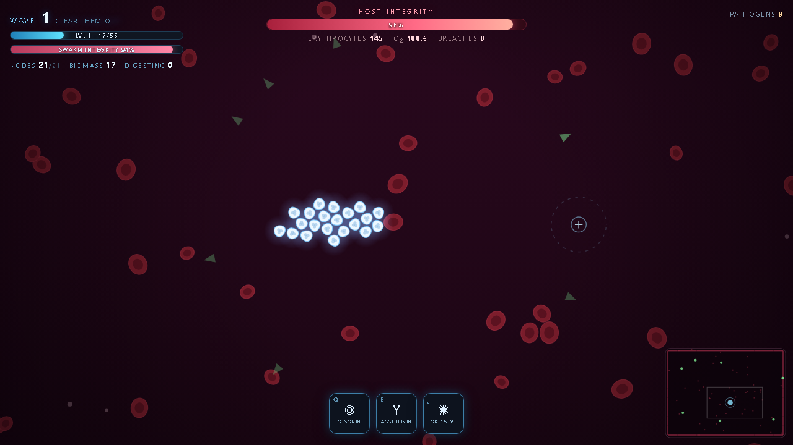

Phago
A white blood cell swarm roguelite.
You do not control cells. You control a cytokine beacon, which is your cursor, and the swarm of leukocytes reads the gradient and chases it. The pathogens are not chasing you either. Every species carries its own objective against the host, and you are the interceptor.
One HTML file on a canvas. No server, no build step, no dependencies.

The swarm is a shape
Moving the mouse moves the beacon and the swarm follows. Holding the left button compresses it into a dense ramming ball, and holding the right button disperses it into a wide filter net. That single dial, tight against loose, is most of the moment-to-moment play, because a compressed swarm hits one target hard and a dispersed one covers ground.
Three volleys sit on top of it. Opsonin tags targets, strips capsules and doubles digestion. Agglutination cross-links pathogens into slow clumps. Oxidative burst is an area attack that costs 16% of your own integrity, so it is always a trade.
Mass decides what you can eat
Engulfing is gated on mass. The game sums the engulf power of every node touching a target, plus a reduced contribution from nodes within reach of a pseudopod, and if that total is under the threshold nothing happens. The target just shows how much mass you have against how much you need. Clear the bar and an encirclement ring fills instead.
Because contact damage softens big prey as it lands, a target that was too heavy a moment ago becomes edible once the swarm has worn it down. Small prey is swallowed on touch.
Eating is not free. The node that swallowed something carries a vacuole while it digests, moves 42% slower, and can have the vacuole ruptured by a hit, which releases the pathogen enraged.
Every species wants something different
Most go for red cells, and losing erythrocytes feeds back on you directly, since oxygen scales swarm speed. Let hemolysis run and the swarm slows down exactly when it can least afford it.
| Species | After | What makes it awkward |
|---|---|---|
| Streptococcus | Red cells | Plain hemolysis, the baseline drain |
| Salmonella | Red cells | Detonates inside whichever cell swallows it, unless you tag it first |
| Merozoite | Red cells | Invades a red cell, incubates, then bursts into two daughters |
| Staph. aureus | Red cells | Ranged pores that permanently cut a node's maximum health |
| Pseudomonas | The swarm | Latches on, suppresses division and drains banked biomass |
| Clostridium | Vessel wall | Chews the wall into breaches and leaves ground that will not heal |
| Aspergillus | Open lumen | Roots down and grows a mat that physically blocks the swarm |
| Biofilm colony | Red cells | Buds daughters, enrages when hurt, floods endotoxin on death |
The host is the clock
Host integrity is the real fail state. It drains from every red cell lysed, every breached wall segment and every fungal mat left standing, and it repairs between waves. Losing the whole swarm also ends the run, though while any node survives the marrow keeps making more, and it speeds up when the swarm is far below capacity so a bad wave stays a setback.
Balance was tuned against an instrumented autopilot rather than by feel, running a dozen full games per iteration and recording host loss per wave attributed by cause. A near-optimal autopilot reaches wave 15 to 17 and dies to host failure rather than losing its swarm. Playing it by hand, expect somewhere around wave 10 to 14.
Synergies you build toward
These are not cards you pick. Invest far enough in two lineages and the synergy switches itself on. Neutrophil and macrophage together make prey caught in a chromatin web yield double biomass and digest with no speed penalty. Macrophage and T-lymphocyte make finishing a heavyweight display its antigen, which doubles damage against that entire species for a while. Neutrophil and T-lymphocyte make every execution seed web traps on everything caught in the blast.
Level-up cards that would complete one are badged, so you can steer toward them on purpose.